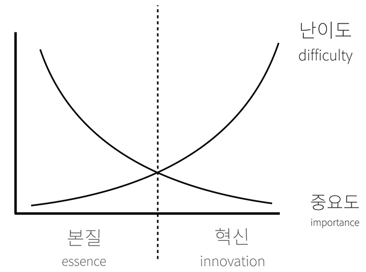
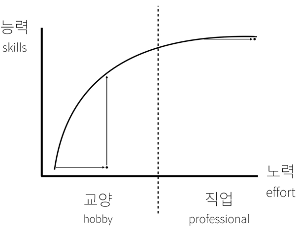

- HTML & Internet
- CSS
- JavaScript
- Database
- MySQL
- PHP
- PHP & MySQL
- Phython
- Home Server
- DNS(Domain Name System)
- Tips
- egoing's Words
egoing의 말 중 주옥같은 와닿는 말
- 공부의 효용을 뇌에게 자주 증명하라
- 컴퓨터공학은 하나의 거대한 시이다. 물질이 아닌 논리를 기반으로 하며, 컴퓨터공학의 산출물을 사람들에게 쉽게 이해시키기 위해 일상에서 사용하는 언어를 차용하여 비유적으로 설명한다. ex) tag
- 쉬운 것은 중요하고, 어려운 것은 중요하지 않을 경향이 큼
- 본질과 혁신(WEB1-20.)
- 기술은 본질(essence)과 혁신(innovation)으로 구분되며,
학습은 교양(hobby)과 직업(professional)으로 구분된다.
본질은 교양과 어울리며, 혁신은 직업과 좋은 짝이된다.
- 학습 초반의 내용은 매우 중요하지만 쉽고,
진도가 나아갈 수록 내용은 별로 중요하지 않으면서도 매우 어려워진다.
- 중요도와 난이도의 교점을 중심으로 학습내용이 교양과 직업으로 구분되어, 교양은 매우 중요하면서도 쉬운 내용을 배우며, 직업은 크게 중요하지는 않지만 매우 구체적인 어려운 부분을 배우게 된다.
- 교양의 학습범위, 조금만 배워도 할 수 있는 것이 크게 늘어나는 반면,
직업은 아무리 노력해도 실력이 잘 늘어나지 않는다.
- 우리의 마음이 힘든 이유는
교양학습자의 경우 실력의 향상속도를 보지 않고, 낮은 상태의 실력을 보기 때문이며,
직업학습자의 경우 본인의 높아진 상태의 실력을 보지 않고, 실력의 향상속도에 집중하기 때문이다.
- 부정적 요소(자괴감, 소외감, 불안함)과 긍정적 요소(만족감, 자신감, 기대감) 모두 학습에 도움이 된다면 굳이 부정적 요소에 기대어 공부할 필요가 있을까?
- 뇌를 이기는 장사는 없음. 뇌를 괴롭히면 빨리 성장할 수 있어도 오래 성장할 수 없다. 공부는 평생해야하는 시대이다.
- 기계가 잘 할 수 있는 사람이 하고 있을 때, 우리는 불편함을 느끼게 되며, 불편함이 충분히 누적되어 절망감으로 변화되었다면 그때가 공부를 시작해야하는 적기이다. 더 빨라져도 더 늦어져도 안된다. 왜냐하면 문제의 심각함에 비해 공부의 어려움은 충분히 극복할 수 있는 시기이기 때문이다. 절망감이 클 수록 문제 해결 후에 행복감은 커진다. 이때의 공부는 나를 억압하는 무언가가 아니라 문제로 부터 해방시키는 구원자가 된다. 공부를 함으로써 직면한 문제를 해결하는 공부의 효용을 뇌에게 자주 증명해 준다면 뇌는 공부를 계속 하고 싶어할 것이다.

